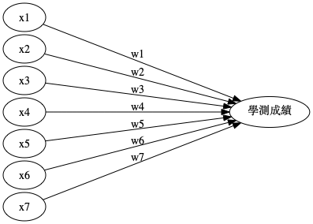

監督式學習
Table of Contents

1. 簡介
1.1. 監督式學習的主要類型
1.1.1. 分類(Cliasification)
分類問題也稱為離散(discrete)預測問題，因為每個分類都是一個離散群組。In supervised learning, the training set you feed to the algorithm includes the desired solutions, called labels1.

Figure 1: 典型的監督式學習：垃圾郵件分類
可再細分為:
- Binary classification
- Multiclass classification
典型的分類案例: MNIST, IRIS
1.1.2. 迴歸(Regression)
另一種監督式學習為迴歸（regression），即，根據一組預測特徵（predictor，如里程數、車齡、品牌）來預測目標數值（如二手車車價）1，這個目標數值也是label。
有些迴歸演算法也可以用來分類，例如Logistic，它可以輸出一個數值，以這個數值來表示對應到特定類別的機率，例如，某封email為垃圾郵件的機率為20%、某張圖片為狗的機率為70%。
迴歸問題可再細分為兩類：
- Linear regression:
- 假設輸入變量(x)與單一輸出變量(y)間存在線性關係，並以此建立模型。
- 優點: 簡單、容易解釋
- 缺點: 輸入與輸出變量關係為線性時會導致低度擬合
- 例: 身高與體重間的關係
- Logistic regression
- 也是線性方法，但使用logist function轉換輸出的預測結果，其輸出結果為類別機率(class probabilities)
- 優點: 簡單、容易解釋
- 缺點: 輸入與輸出變量關係為線性時無法處理分類問題
典型迴歸案例: Boston Housing Data
1.2. 範例
1.2.1. 信用卡詐欺
以信用卡公司來說，信用卡詐欺可以透過各種資料對照評分，預測出該事件的分數。例如地點：一個平時生活在台灣的用戶忽然在日本刷卡、或一個平時都是白天刷卡消費的用戶忽然在凌晨三點刷卡，這些事件都可以當成評分指標(特徵)，提供模型做為預測是否為信用卡詐欺的預測依據。
1.2.2. 影像辨識
例如，資料可能是手寫數字的影像，這些影像會加上註解，以指示其所代表的數字。只要有足夠的標記資料，監督式學習系統最終會辨識出與每個手寫數字關聯的像素和形狀類別。機器學習在影像辨識上的精準度目前已可超過人類的水準。
1.2.3. 學測成績
如果目標是要「預測學生學測總級分」，那麼，我們得先了解有那些因素會影響學生的學測成績，初步估計也許包括以下因素：
- 上課狀況
- 是否認真寫作業
- 歷次段考成績
- 校內模考成績
- 回家後是否努力讀書
- 是否沉迷網路遊戲或手機遊戲
- 是否有男/女朋友
此時，我們的預測模型就如圖2所示

Figure 2: 學測成績預測模型#1
然而，上述因素只是一般性的文字描述，畢竟過於模糊而無法對之進行精確計算，所以，我們有必要再對其進行更精確的描述，此處的參數（即影響因素及相對權重）又稱為特徵值。此外，每個因素影響學測結果的程度理應會有所差異，因此也有必要對各因素賦予「加權」（也稱為權重），詳細考慮後的因素及加權列表如下。
| no | 因素編號 | 模糊描述 | 精確描述 | 權重 |
|---|---|---|---|---|
| 1 | \(x_1\) | 上課狀況 | 平均每次上課時認真聽講的時間百分比 | \(w_1\) |
| 2 | \(x_2\) | 是否認真寫作業 | 作業平均成績 | \(w_2\) |
| 3 | \(x_3\) | 歷次段考成績 | 各科段考平均成績 | \(w_3\) |
| 4 | \(x_4\) | 校內模考成績 | 歷次模考平均成績 | \(w_4\) |
| 5 | \(x_5\) | 放學後是否努力讀書 | 放學後花在課業上的時間 | \(w_5\) |
| 6 | \(x_6\) | 是否沉迷網路遊戲或手機遊戲 | 每天平均花在遊戲的時間 | \(w_6\) |
| 7 | \(x_7\) | 是否花太多時間交異性朋友 | 有/無男女朋友 | \(w_7\) |
此時，我們的預測模型就如圖3所示，換言之，是在解一個\(f(x)=x_1*w_1+x_2*w_2+x_3*w_3+...+x_7*w_7\)的函式問題。我們可以先針對這些特徵值對學生進行問卷調查，並追踪學生的學測成績，最後將取得的大量的特徵值輸入到到我們的函數模型（圖3）中，觀察計算結果與實際資料的吻合程度，藉由不斷的調整參數（權重）來控制函數，讓輸出的計算結果與實際答案完全吻合，以便求得最準確的函數。

Figure 3: 學測成績預測模型#2
像這種透過比對現有資料不斷調整參數以便將誤差函數減至最小的學習過程稱為「監督式學習」，而至於「非監督式學習」則是藉由找出不同學生在這些特徵值上的相似程度，將學生分群，而同一群組的學生共通之處或許便會直接與學測成績相關。
1.3. 特例
- 序列生成(sequence generation)：給定一張圖，產生一個標題來描述該圖片，有時也可以使用一部份連續的資料進行預測。
- 語法樹預測(syntax tree prediction)：給定一個句子，以語意的結構為節點，預測並分解成語法樹。
- 物體偵測(object detection)：給定一張圖片，繪製邊界框來標示圖片內不同的物體。這也可以視為分類問題（給定許多候選邊界框，對每個邊界框的內容進行分類）或并用分類和迴歸技巧，透過向量迴歸預測邊界框。
- 圖像分割(image segmentation)：給定一張圖片，用像素遮罩(pixel-level mask)來區別不同物體。
- Linear Regression: 拿前幾天的空氣 PM 值預估未來的空氣 PM 值
- Classification
- Binary Classification: 垃圾郵件分類
- Multi-class Classification: 手語翻譯
- k-Nearest Neighbors (KNN)
- Naive Bayes Classifiers
- Decision Tree
- Neural Networks (Deep Learning)
- Ensembles of Decision Trees
- Linear Models: Logistic regression
2. 監督式學習基本步驟
- 準備學習對象的資料
- 將資料分為輸入資料（特徵）與輸出資料（標籤、即該組特徵的答案）
- 將特徵輸入類神經網路
- 將類神經網路的預測結果與標籤進行比較、計算二者間的差異
- 將4.的差異回饋給模型、依此更新模型中的參數
- 回到3.
3. 監督式學習演算法
3.1. K-nearest neighbors (KNN)
KNN藉由找出與新資料點最相近的 k 個已具有label的資料點，讓這些資料點投票決定新資料點的label。
- 優點: 能處理更複雜的非線性關係，但仍可被解釋
- 缺點: 隨著資料與features的數量增加，KNN的效果也會降低； k 值的選擇也會影響KNN的效果，太小的 k 值會導致過度擬合、太高的 k 值則會低度擬合。
- 應用: 經常用於推薦系統
3.2. Methods based on tree(Decision tree and Random Forest)
- Single decision tree: 遍歷所有訓練資枓來建立規則，但容易過度擬合
- Bagging: 將上述tree加入bootstrap aggregation(如bagging)，即，使用多次隨機實例採樣(multiple random samples of instances)，並為每次採樣建立一棵decision tree，並對每個資料實例進行預測，預測方式為透過平均每棵樹的預測結果，藉由這種方式可以解決decision tree容易過度擬合的問題。
- Random forest: 除了將資料實例進行採樣，也對每棵decision tree的分支條件中 待預測label 進行隨機採樣，而非使用所有的待預測label。透過這種方式，random forest可以建立出彼此相關性更低的decision，進而改善過度擬合與泛化誤差。
3.3. Boosting
同樣是建立許多樹，但是它 依多建立每棵decision tree , 利用前一棵decision所習得的資訊來改善下一棵decision tree的預測結果。是所有tree-based solution中表現最好的方式，也是許多machine learning比賽的常勝軍。
- 優點：performance佳，能處理資料缺失與特徵分類問題
- 缺點：可解釋性低
3.4. SVM(Support Vector Machines)
使用演算法和已知的label在空間中建構超平面來分類資料
3.5. 神經網路
Footnotes:
Hands-On Machine Learning with Scikit-Learn: Aurelien Geron